1. 实验目的
熟悉UDP数据包格式，了解各个字段的含义与作用。
掌握UDP校验和的计算方法，理解其在保证数据传输准确性方面的重要性。
掌握UDP数据包的的发送和接收处理过程，明确其中的关键环节和机制。
2. 实验任务
在完成协议栈之ICMP协议的基础上，编写UDP报文的发送、接收函数，使其能够发送和接收UDP数据报文，并且能通过实验评测系统的测试。
重要
常见坑点预警
Wireshark 抓到的 UDP / IP checksum 显示为
0，不一定是代码错，先排查硬件校验和卸载（Checksum Offload）。计算 UDP 校验和前必须先把校验和字段清零；若数据长度为奇数，还需要补一个
0字节参与计算。伪首部中的源 / 目的 IP、协议号、UDP 长度只参与校验和计算，不会真正随 UDP 负载一起发送。
Windows 环境下建议使用 Npcap 1.31；如果无线网卡无法关闭卸载，优先切到 纯 Linux/WSL2 环境配置（veth） 的
veth方案。详细 FAQ 可继续参考 Lab7 常见问题（UDP），综合排查建议参考 典型 Bug 排查手册。
3. 实验原理
3.1. UDP协议概要
TCP 和 UDP 是 TCP/IP 体系中两个具有代表性的传输层协议。TCP 提供可靠的通信传输，它会确保数据在传输过程中不丢失、不重复且按序到达；而 UDP 是不具有可靠性的数据报协议，它不保证数据的可靠传输，可能会出现数据丢失、乱序等情况。
有人可能会认为 TCP 一定优于 UDP，但实际上，TCP 与 UDP 的优缺点不能简单、绝对地进行比较。UDP 主要适用于那些对高速传输和实时性有较高要求的通信或广播通信场景。例如，在使用 IP 电话进行通话时，如果采用 TCP 协议，当数据在传输过程中丢失时会被重发，这就会导致通话声音无法流畅传输，影响正常交流。而 UDP 不会进行重发操作，也就不会出现声音大幅度延迟到达的问题。即使有部分数据丢失，也只是会导致画面或声音出现短暂停顿甚至混乱，但相比之下，这点干扰对通信的影响较小。
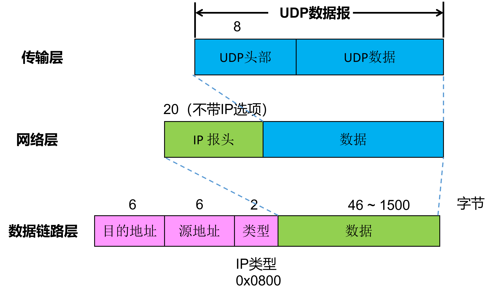
3.2. UDP头部
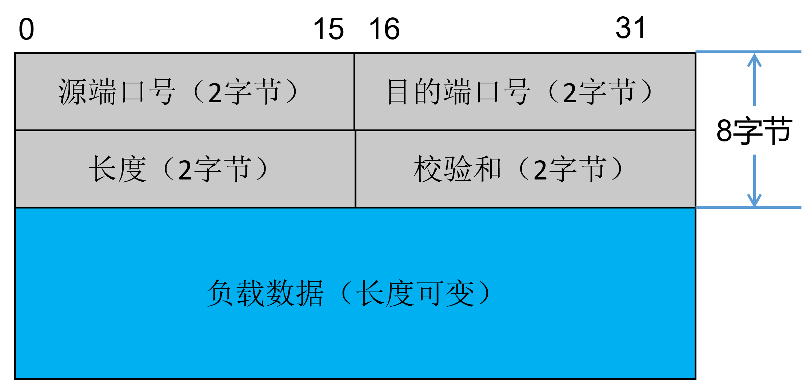
从之前的实验我们知道，数据链路层通过 “类型” 字段来区分上一层所采用的网络协议（如 IP、ARP 等）；网络层的 IP 首部也有一个 “协议” 字段，用于标识上一层采用的传输层协议。同样地，传输层（TCP、UDP）使用 “端口号” 这一类似功能的字段来识别自己所传输的数据应该发给哪个应用程序，因此，端口号也被称为程序地址。
备注
端口号范围划分
0~1023：知名端口号，如http 80，FTP 20/21，Telnet 23，SMTP 25，DNS 53等。
1024~49151：注册端口号。关于知名端口号和注册端口号，请参考以下网址：http://www.iana.org/assignments/port-numbers。
49152~65535：动态或私有端口号。客户端应用程序的端口号可由操作系统动态分配，服务端一般要自设定端口号。
长度 字段是UDP头部和UDP数据报的总长度，以字节为单位。
校验和 其设计目的是为了提供可靠的 UDP 首部和数据，用于检测数据在传输过程中是否发生错误。
3.3. UDP校验和计算方法
UDP 校验和的覆盖范围与 IP 首部校验和的覆盖范围不同。UDP 校验和需要覆盖 UDP 头部、UDP 数据和一个伪头部。 伪头部是在 UDP 头部之前添加的 12 字节头部信息，其中源 IP 地址、目的 IP 地址和协议号来源于 IPv4 的头部，UDP 长度是 UDP 包的总长度（不包含伪头部和任何填充的数据）。此外，如果 “数据” 字段的长度不是偶数个字长，会填充一个值为 0 的字节来计算校验和。需要注意的是，伪头部和任何填充的数据不会与 UDP 数据报一起被传送出去。
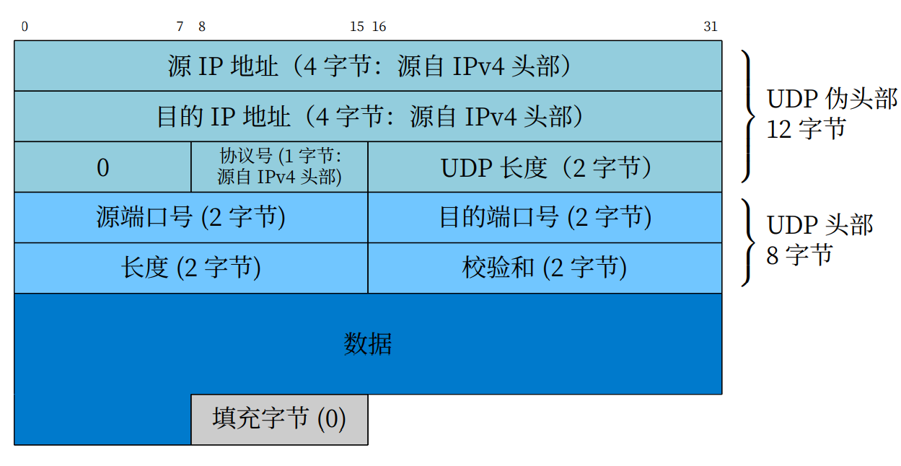
备注
如果 UDP 头部的校验和字段填入 0，可以不进行校验和计算，这样能降低协议处理的开销，从而提高数据转发的速度。然而，如果 UDP 首部的端口号或是 IP 首部的 IP 地址在传输过程中损坏，可能会对其他通信造成不良影响。因此，建议使用校验和检查来保证数据传输的准确性。
提示
为什么要使用UDP伪头部计算校验和？
在 TCP/IP 通信中，仅凭目标端口识别某一个通信是不够的，通常采用 5 个信息（也称五元组）来识别一个通信，分别是源 IP 地址、目标 IP 地址、协议号（IP 首部中的协议字段）、源端口号、目标端口号。只要其中有一项损坏，就有可能导致应该收包的应用程序收不到包，不该收到包的应用程序却收到了包。为了避免这些问题，在校验和的计算中引入了伪头部的概念，通过包含更多的关键信息来增强校验的准确性。
4. 代码实现
同学们需仔细研读本实验提供的代码框架，完成 src/udp.c 文件中的 udp_in() 函数和 udp_out() 函数，以及 src/utils.c 文件中的 transport_checksum() 函数的编写。
4.1. UDP数据报输出处理
同学们要自行实现 udp_out() 函数，其功能实现步骤如下：
Step1 添加 UDP 报头：
调用 buf_add_header() 函数，为待发送的数据添加 UDP 报头，为后续填充首部字段做准备。
Step2 填充 UDP 首部字段：
按照 UDP 协议规范，依次填充 UDP 首部的各个字段，如源端口号、目的端口号、长度等。
Step3 计算并填充校验和：
先将校验和字段填充为 0，然后调用 transport_checksum() 函数计算 UDP 数据报的校验和。计算完成后，将得到的校验和结果填入校验和字段。
Step4 发送 UDP 数据报：
调用 ip_out() 函数，将封装好的 UDP 数据报发送出去。
4.2. UDP数据报输入处理
同学们需要自行实现 udp_in() 函数，其功能实现步骤如下：
Step1 包检查：
对接收到的数据报进行检查，判断数据报的长度是否小于 UDP 首部长度，或者接收到的包长度是否小于 UDP 首部长度字段给出的长度。如果满足上述条件之一，则说明数据报不完整或存在异常，将其丢弃，不做进一步处理。
Step2 重新计算校验和：
先把首部的校验和字段保存起来，然后将该字段填充为 0。接着调用 transport_checksum() 函数重新计算校验和。将计算得到的校验和值与接收到的 UDP 数据报的校验和进行比较，如果两者不一致，则说明数据报在传输过程中可能发生了错误，将其丢弃。
Step3 查询处理函数：
调用 map_get() 函数，在 udp_table 中查询是否有该目的端口号对应的处理函数（回调函数）。
Step4 处理未找到处理函数的情况：
如果在 udp_table 中没有找到对应的处理函数，则调用 buf_add_header() 函数增加 IPv4 数据报头部，再调用 icmp_unreachable() 函数发送一个端口不可达的 ICMP 差错报文，通知发送方该端口不可用。
Step5 调用处理函数：
如果在 udp_table 中能找到对应的处理函数，则去掉 UDP 报头，调用该处理函数对数据进行相应的处理。
4.3. UDP校验和
同学们需要自行实现 transport_checksum() 函数（见src/utils.c），其功能实现步骤如下：
Step1 增加 UDP 伪头部：
调用 buf_add_header() 函数，为 UDP 数据报增加 UDP 伪头部，以便进行校验和计算。
Step2 暂存 IP 头部：
将被 UDP 伪头部覆盖的 IP 头部拷贝出来，暂存起来，避免其被 UDP 伪头部覆盖。
Step3 填写 UDP 伪头部字段：
按照 UDP 伪头部的格式要求，填写 12 字节的字段，包括源 IP 地址、目的 IP 地址、协议号和 UDP 长度等。
Step4 计算 UDP 校验和：
对包含 UDP 伪头部、UDP 头部和 UDP 数据的数据块进行校验和计算。
Step5 恢复 IP 头部：
再将 Step2 中暂存的 IP 头部拷贝回来，确保 IP 头部信息的完整性。
Step6 去掉 UDP 伪头部：
调用 buf_remove_header() 函数，去掉之前添加的 UDP 伪头部，因为伪头部不会随 UDP 数据报一起传输。
Step7 返回校验和值：
返回计算得到的 UDP 校验和值。
5. 实验自测
在 UDP 实验中，我们提供了两种实验自测方式，分别是 udp_test 自测（组件测试）和 udp_server 自测（集成测试），它们在测试目的和方式上各有特点。为确保整个协议栈能正常工作，建议你先完成 udp_test 自测，再进行 udp_server 自测。
对比维度 |
udp_test 自测（组件测试） |
udp_server 自测（集成测试） |
|---|---|---|
测试目的 |
验证 UDP 协议的收发功能正确性（协议层实现） |
验证完整协议栈的协同工作（Eth/ARP/IP/UDP 全链路通信） |
测试层次 |
协议层单点测试（仅关注 UDP 协议） |
系统级集成测试（验证协议栈与真实网络交互） |
测试环境 |
虚拟测试网卡 + 离线数据包 |
真实物理网卡 + 网络调试工具 |
网络配置要求 |
固定 IP/MAC（config.h 中测试网卡的 NET_IF_IP 和 NET_IF_MAC 不可修改） |
需根据物理机网卡修改 NET_IF_IP（网络号一致，主机号不同） |
数据包来源 |
预先生成的离线数据包（.pcap 文件） |
实时生成的网络数据包（通过调试工具发送） |
验证方式 |
对比日志文件（log）与预存抓包文件（pcap）的一致性 |
观察 Wireshark 抓包结果 + 调试工具响应 + 终端运行日志 |
调试复杂度 |
低（通过日志直接定位协议解析错误） |
高（需排查物理网络配置、防火墙、协议栈协同问题） |
适用阶段 |
协议开发初期（验证基础收发逻辑） |
协议栈集成后期（验证端到端通信能力） |
典型测试场景 |
检查 UDP 报文校验和计算、端口绑定等 |
检查 ARP 请求响应、IP收发、UDP 回显服务等端到端行为 |
本节后续截图和网卡配置步骤基于 Windows。使用 Linux 环境进行自测时，请按实际环境选择对应指南：
Linux 物理机、WSL2 或自建 Linux 虚拟机：纯 Linux/WSL2 环境（veth）。
OSLab Ubuntu 虚拟机：OSLab Ubuntu 虚拟机环境。
两份指南都包含组件测试和基于 veth 的在线集成测试步骤。
5.1. udp_test 自测
udp_test 自测的方式与之前的 Eth、ARP、IP、ICMP 协议自测相同。通过自构建的测试网卡和驱动层来读写离线数据包，然后对比日志（log）文件和数据包捕获（pcap）文件，以此验证协议的收发功能。具体操作步骤如下：
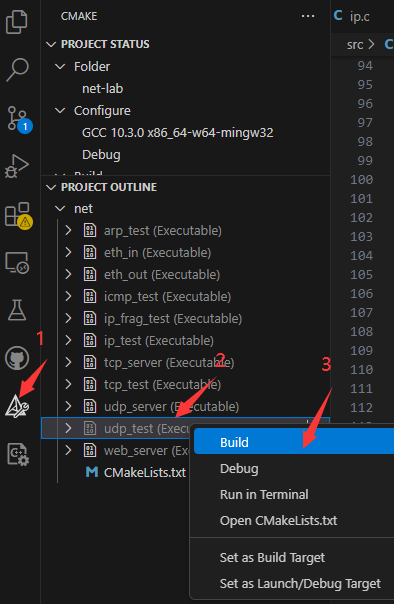
接着，打开VSCode的终端，到build目录下，输入ctest -R udp_test进行自测。
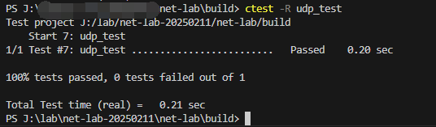
✅ 成功：终端显示 100% tests passed
❌ 失败：根据错误日志排查问题，可参考 Eth协议调试指南
5.2. udp_server 自测
udp_server 自测的主要目的是对整个网络协议栈（涵盖之前已实现的 Eth、ARP、IP、UDP 等协议）的收发功能进行全面测试。在这个测试中，我们会使用真实的 UDP/TCP 调试工具与自构建的协议栈进行点对点通信。
重要
测试环境与网卡设置说明
在开展 Eth、ARP、IP、ICMP、UDP 等协议实验的单独测试时，请务必保持 config.h 头文件中测试网卡的 NET_IF_IP 和 NET_IF_MAC 宏定义不变，这样可以保证测试环境的稳定性和一致性。
为了对整个网络协议栈的功能进行有效测试，我们的协议栈会虚构一张自定义网卡与物理机（即用于测试的计算机）网卡进行通信。若物理机有多个网卡，任选其一即可，它可以是真实的联网网卡，也可以是虚拟机产生的虚拟网卡等，根据该网卡的IP来修改 include/config.h 头文件中的 NET_IF_IP 宏定义，自定义网卡的 IP 地址需要满足以下特定要求：
🌐 网络号与物理机网卡相同（如物理机IP为192.168.1.100，掩码255.255.255.0 → 网络号为192.168.1）
🖥️ 主机号与物理机网卡不同（如物理机为.100 → 协议栈可设为.101）

udp_server自测步骤如下：
Step1 编译udp_server
在 VSCode 中执行 CMake 编译
选择 “在终端中运行”（生成可执行文件）
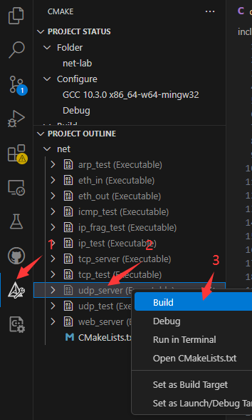
Step2 配置抓包工具（Wireshark）
打开 wireshark， 选择物理机的计算机网卡作为抓包对象 ，并设置过滤条件为：
eth.addr == XX.XX.XX.XX
XX.XX.XX.XX 是自定义虚拟网卡的MAC地址，详见include/config.h头文件。
1 #define NET_IF_MAC \
2 { \
3 0x00, 0x11, 0x22, 0x33, 0x44, 0x55 \
4 } //自定义网卡mac地址

Step3 启动协议栈
在 VSCode 中选择“在终端中运行”
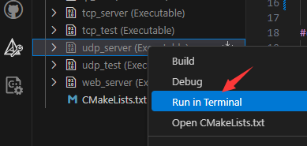
终端显示如下：
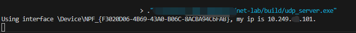
Step4 建立UDP连接
打开TCP&UDPDebug调试工具（点这里下载），点击“创建连接”，类型选择“UDP”，目标 IP：10.249.14.101（ 该目标IP地址需要改成你自己代码中config.h中定义的IP地址 ），目标端口号：60000，本机端口：随机端口。设置完成，点击创建。
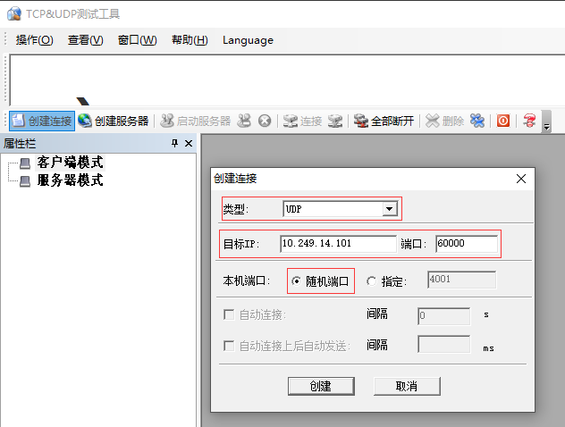
点击连接
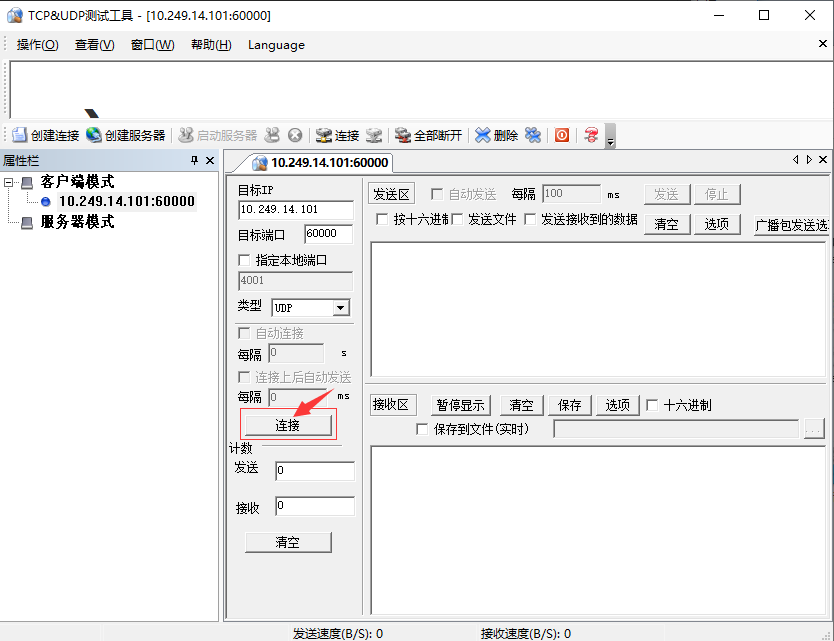
Step5 发送测试数据
在TCP&UDPDebug调试工具的发送窗口输入“HITSZ”测试字符串，点击发送。此时UDP调试工具能够接收到虚拟网卡回送的数据包。如下图所示。
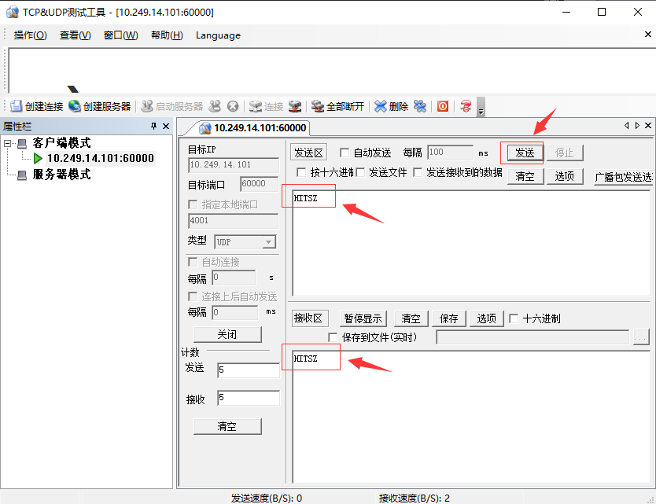
在终端上也能看见udp_server的运行结果。
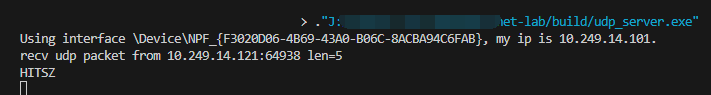
此时，Wireshark上也有数据包的交互。
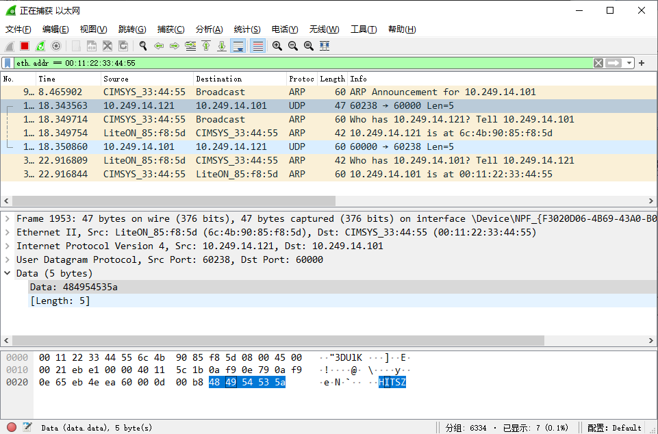
注意
请仔细分析 Wireshark 捕获到的报文（包括 ARP、UDP 报文），并将分析结果记录到实验报告中。
5.3. GDB调试
本实验支持使用GDB调试，请参考 Windows开发环境搭建 中的“Windows下编译和调试”